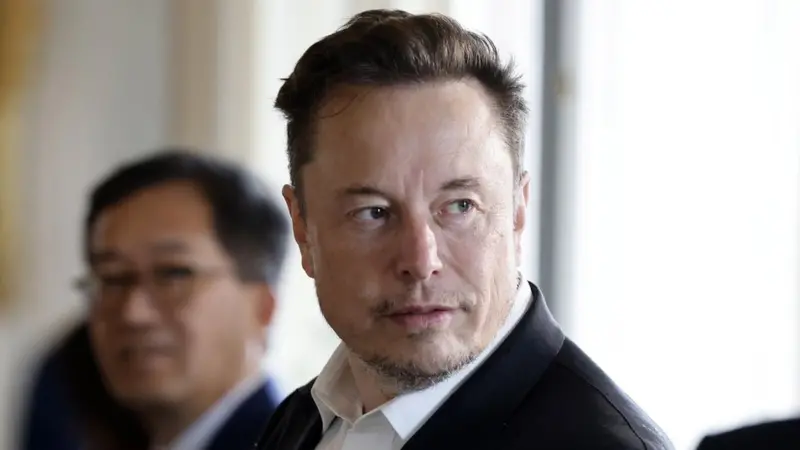
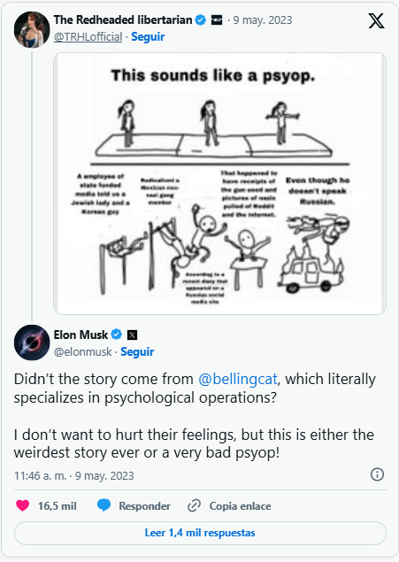

otras noticias
- Cómo un viaje a Noruega me hizo ver que estaba equivocado y que la Tierra no es plana
- Las imágenes falsas creadas con IA para intentar atraer el apoyo de los votantes negros hacia Trump
- La princesa Kate pide disculpas por la "confusión" que causó su foto retirada por las agencias de noticias por inconsistencias
- “Me arrepiento de haber publicado en línea que yo era Madeleine McCann”
- El Yimeilun, la estrategia con la que China busca influir en las elecciones de Taiwán al sembrar dudas sobre su alianza con EE.UU.
- Donald Trump: cómo detectar imágenes creadas por inteligencia artificial como las fotos falsas del arresto del expresidente
- Los sobrevivientes de ataques terroristas que son acusados de fingir por teóricos de la conspiración
- Quiénes son los "Ciudadanos del Reich", el grupo asociado con los golpistas arrestados en Alemania
Las afirmaciones falsas y engañosas amplificadas por Elon Musk en Twitter
El director ejecutivo de Twitter, Elon Musk, ha recibido criíticas por amplificar afirmaciones falsas y engañosas en su red social en meses recientes, mientras sus simpatizantes alegan que el magnate sólo está "haciendo preguntas" o "desafiando la narrativa tradicional".
Musk, que tiene la cuenta con más seguidores en la plataforma, suele ser cauteloso con la redacción de sus tuits, sin embargo interactúa con importantes cuentas de la derecha estadounidense, incluyendo algunas conocidas por compartir información falsa.
El equipo de verificación de la BBC ha analizado algunas de las teorías falsas y declaraciones incendiarias en Twitter sobre las que Musk ha comentado en meses recientes.
Tiroteo en Texas
Musk ha puesto en duda repetidamente la evidencia que demuestra que el sospechoso de una reciente balacera en un centro comercial en Texas tenía inclinaciones neonazis.
Las cuentas del atacante en YouTube y la red social rusa Odnoklassniki fueron inicialmente descubiertas por el grupo investigativo de sistema abierto Bellingcat, donde aparecían fotos de tatuajes con esvásticas, un largo testamento violento y un meme que mencionaba "niños latinos" y la frase "conviértete en un supremacista blanco".
Esas cuentas también fueron examinadas independientemente por la BBC y otros periodistas, y la policía afirmó que el atacante "tenía ideas neonazis", aunque los motivos por los que mató a ocho personas siguen siendo investigados.
No obstante, Musk puso en duda la evidencia y, sin ofrecer pruebas, aludió a que Bellingcat estaba involucrado en "operativos psicológicos", o "psyops", como se conoce en inglés.
Los operativos psicológicos son comúnmente utilizados en guerra o contra países extranjeros hostiles como una forma de provocar para que el rival piense o actúe de una manera en particular.
Pero la idea descabellada de que las autoridades habitualmente realizan ese tipo de operativos vinculados a tiroteos indiscriminados o ataques terroristas para influir en la opinión pública se ha convertido en un tema de los círculos adeptos al porte de armas en Estados Unidos.
Musk se ha referido varias veces a este popular concepto de "psyops", por ejemplo en marzo, cuando prometió enfrentar la "manipulación de la opinión pública" en Twitter usando inteligencia artificial.
En respuesta, el fundador de Bellingcat, Eliot Higgins, catalogó al dueño de Twitter como "un idiota que consume medios basura". Musk no respondió a las solicitudes de comentarios.
Musk reiteró sus aseveraciones en una entrevista con el medio CNBC la semana pasada, afirmando que Odnoklassniki era un sitio "oscuro" del que "nadie jamás ha escuchado".